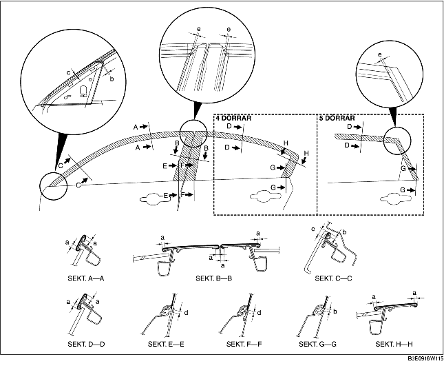

1. Torka bort eventuellt fett eller smuts från vidhäftningsytan på dörren.
2. Skär bort den del som inte ska användas längs den streckade linjen.
3. Ta bort skyddspappret och fäst filmen på dörren enligt bilden.

4. Ta av den genomskinliga skyddsfilmen på fönsterbågsfilmen.